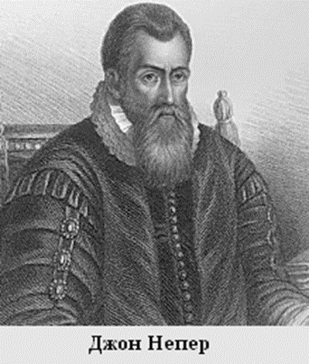
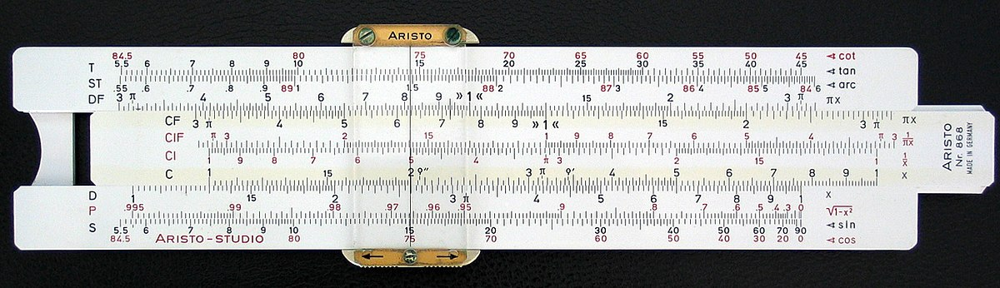
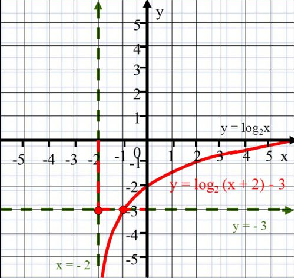
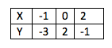

История возникновения логарифмов
Логарифмы возникли в 16 веке в связи с необходимостью проведения большого объема приближенных
вычислений
в ходе решения практических задач, и в первую очередь задач астрономии, (в частности, при
определении
положения судов по звездам и по Солнцу). Потребность в сложных расчётах в XVI веке быстро росла.
Значительная часть трудностей была связана с умножением и делением многозначных чисел. В ходе
тригонометрических расчётов, Неперу пришла в голову идея: заменить трудоёмкое умножение на простое
сложение, сопоставив с помощью специальных таблиц геометрическую и арифметическую прогрессии, при
этом
геометрическая будет исходной. Тогда и деление автоматически заменяется на неизмеримо более простое
и
надёжное вычитание, а извлечение корня степени n сводится к делению логарифма подкоренного выражения
на
n. В предисловии к книге «Рабдология» Непер писал: 
«Я всегда старался, насколько позволяли мои силы и способности, освободить людей от трудности и
скуки
вычислений, докучливость которых обыкновенно отпугивает очень многих от изучения математики».
Сам термин «ЛОГАРИФМ» предложил Дж. Непер; он возник из сочетания греческих слов logos (здесь —
отношение) и arithmos (число),которое означало “число отношений”.
Логарифмы с основанием ввел учитель математики Спейдел. Слово основание заимствовано из теории о
степенях и перенесено в теорию логарифмов Эйлером. Глагол “логарифмировать” появился в 19 веке у
Коппе.
Коши первый предложил ввести различные знаки для десятичных и натуральных логарифмов. Обозначения,
близкие к современным ввел немецкий математик Прингсхейм в 1893 году. Именно он обозначал логарифм
натурального числа через ln. Определение логарифма как показателя степени данного основания можно
найти
у Валлиса (1665 год), Бернулли (1694 год).
В 1614 году шотландский математик-любитель Джон Непер опубликовал на латинском языке сочинение под
названием «Описание удивительной таблицы логарифмов» (лат. Mirifici Logarithmorum Canonis
Descriptio). В
нём было краткое описание логарифмов и их свойств, а также 8-значные таблицы логарифмов синусов,
косинусов и тангенсов, с шагом 1’. Термин логарифм, предложенный Непером, утвердился в науке.
Понятия функции тогда ещё не было, и Непер определил логарифм кинематически, сопоставив равномерное
и
логарифмически-замедленное движение; например, логарифм синуса он определил следующим образом
Логарифм данного синуса есть число, которое арифметически возрастало всегда с той же скоростью, с
какой
полный синус начал геометрически убывать.
К сожалению, все значения таблицы Непера содержали вычислительную ошибку после шестого знака. Однако
это
не помешало новой методике вычислений получить широчайшую популярность, и составлением
логарифмических
таблиц занялись многие европейские математики, включая Кеплера.
В 1620-е годы Эдмунд Уингейт и Уильям Отред изобрели первую логарифмическую линейку, до появления
карманных калькуляторов — незаменимый инструмент инженера.

Близкое к современному понимание логарифмирования — как операции, обратной возведению в степень —
впервые появилось у Валлиса и Иоганна Бернулли, а окончательно было узаконено Эйлером в XVIII веке.
В
книге «Введение в анализ бесконечных» (1748) Эйлер дал современные определения как показательной,
так и
логарифмической функций, привёл разложение их в степенные ряды, особо отметил роль натурального
логарифма.
Эйлеру принадлежит и заслуга распространения логарифмической функции на комплексную область.
Что такое логарифм
В математике логарифм-это функция, обратная возведению в степень. Это означает, что логарифм данного
числа x-это показатель степени, к которому должно быть возведено другое фиксированное число,
основание
b, чтобы получить это число x. В простейшем случае логарифм подсчитывает количество вхождений одного
и
того же множителя при повторном умножении; например, поскольку 1000 = 10 × 10 × 10 = 103, "основание
логарифма 10" 1000 равно 3, или log10(1000) = 3. Логарифм от x.
Построение графиков логарифмических функций
Нужно построить график следующей функции:
y=log2х+2–3
Решение:

В первую очередь следует определить значения точек для y=log2. Далее переместим начало точки
координат на 3 отрезка по шкале ОY в нижнем направлении и сместим на пару делений в левую
сторону по
оси ОХ. Получим:
Проверить правильность построения графика легко. Достаточно перенести данные в таблицу и
сравнить
значения, которые получились, с изображением:

Заметим действительное совпадение координат, записанных в таблице, и точек, отмеченных на
графике.
Можно сделать вывод о том, что перенос по осям выполнен корректно.
Практическое применение логарифмов
На самом деле логарифмы применяются в любой науке, связанной с вычислениями,
а иногда даже не имеющей к ним никакого отношения, как мы чуть позже убедимся. Чтобы рассмотреть
каждую
из них не хватит и месяца. Будут рассмотрены лишь некоторые из них.
Астрономия
"Изобретение логарифмов, сокращая вычисления нескольких месяцев в труд нескольких дней, словно
удваивает
жизнь астрономов". Знаменитая фраза великого ученого Лапласа о логарифмах упоминает астрономов.
Астрономы не редко проводят сложные вычисления на основе данных, полученных в ходе долгих
наблюдений.
Навигация
Формулы помогают нам найти нужные значения, но для полного понимания сути существования логарифмов
следует найти и изучить более наглядный материал. Навигация для этого самый лучший вариант.
Локсодромия – линия на сфере, которая пересекает под одинаковым углом меридианы. Другими словами это
кривая, в каждой точке имеющая путевой угол.
Психология
Громкость звука измеряют в децибелах, которые пропорциональны логарифму мощности звука,
воздействующего
на ухо. Употребление логарифмических шкал продиктовано особенностями наших органов чувств: зрения,
слуха
и т.д. Человеческий мозг воспринимает раздражения от органов чувств не пропорционально силе
раздражителя
(как мы рассматривали мощность звука), а лишь пропорционально ее логарифму. Именно поэтому ухо
одинаково
способно слышать шорох листьев и не оглохнуть от громкого удара станка на заводе. А глаз может
заметить,
как блестит снег на свету и не ослепнуть, если посмотрит на Солнце, которое в миллиарды раз ярче.
История
Тот факт, что логарифмическая шкала позволяет увидеть и осознать объекты большого масштаба позволяет
применять понятие логарифма и в истории. Чтобы представить себе всю эволюцию нашего человечества
нужно
представить его историю в масштабе, который подвластен представлению. В этом на помощь приходит
логарифмический масштаб (шкала). Такая система называется логарифмической шкалой времени. Из этого
следует, что логарифмы применимы в математическом моделировании развития мира, культуры,
экономики и так далее.
Физика
То, какое значение логарифм имеет в физике, является отдельной темой для проекта по количеству
материала, имеющегося по этому направлению. Здесь будет рассмотрена только одна формула – формула
Циолковского.
Заключение
Использование логарифмов дает людям преимущество в виде упрощения и ускорения сложных вычислительных
операций. Бесспорно, будет нерационально использовать это при умножении 6 на 3, но при действиях с
по-настоящему большими числами данное преимущество значительно упростит задачу.